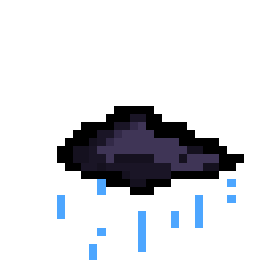
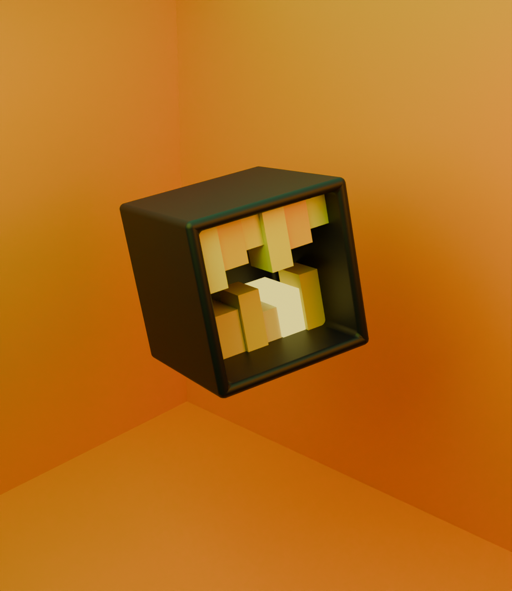

Hello, I'm Amîra.
I'm a builder on Pixl. I like making things and I'm just getting started.
I'm more a girl who's in the world of ideas, the moment I have to make the project, I'm blocked lol. Like, how am I supposed to start ?What tools do I need ? And since I'm a beginner, I wander on Youtube only to watch tutorials for God knows how long. All of that for not starting the project. That why I love guides, it's help me to have a solid base.
I did say I'm a beginner, right ? Well, I am. Sort of. I did participate in a workshop in the beginning of this summer to learn how to make webscrapper, though I won't lie, A.I. did help me ( it was a workshop of 4 days, and we had a presentation at the end, so not a lot of time to do it ;-;). I'm also following coding lesson, the only problem is that I forget pretty quickly when I don't pratice often, so I ended up relearning again and again the basic. It can be sooo annoying.
Some 'project' I did (try)
(By the way you should know that I've done more art project than coding ones)
I didn't know pixel art can be that hard.
 I tried to make a cloud, but once I send the image on my laptop, I was like : meh, it could be better (specially the colors), so I tried again.
I tried to make a cloud, but once I send the image on my laptop, I was like : meh, it could be better (specially the colors), so I tried again.

I'm not please with the result, but I find it better than the first one. And I also have to learn how to manage space in the image. Another thing I've done in the past, a 3D model on Blender of a weird box without following a complete tutorial.